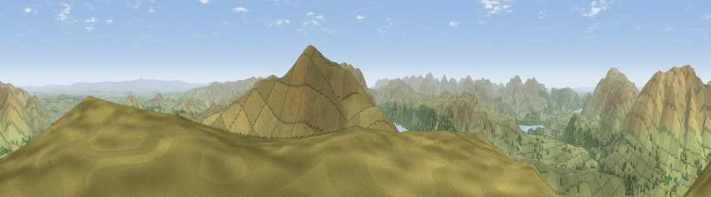

Viewpoint near Threlkeld
#1635 in England · top 13% of its area beats it · near Threlkeld · open accessWhere it is
The exact computed spot (NY 33375 22525). Click the marker for map links.
Public access: this spot lies on mapped open-access land (CRoW Act 2000) — you may roam here on foot. Computed from Natural England's CRoW access layer and OpenStreetMap rights of way — not the legal definitive map. Always verify locally.
The view, rendered

A 360° render of this exact spot computed from the terrain model, tree cover and land cover — summer colours, afternoon light, calibrated against photographs of famous viewpoints. Real trees, hedges and buildings will differ in detail.
The panorama
Grey silhouette: terrain skyline in each direction (720 bearings, Earth curvature and refraction included). Dashed green: skyline with trees (+15 m) and buildings (+8 m) as obstacles. Blue strip: how far the ground is visible on each bearing.
Where the view opens
Wedge length = distance to the farthest visible ground on that bearing (vegetation-aware). Rings at 10, 25 and 50 km.
What fills the view
90% grassland · 8% woodland ·
Angular shares of the visible panorama (visual magnitude), not map area. Landscape diversity 0.17 (0–1 Shannon).
Key numbers
More beautiful places nearby
The staircase of upgrades: each row has a higher view potential than everything closer. Driving times are estimates from straight-line distance, calibrated against real road routing — check an actual route before setting out.
| Place | Direction | Drive | Score |
|---|---|---|---|
| Great Dodd | SSE · 2 km | ~5 min | 80.4 |
| Raise | S · 5 km | ~11 min | 81.5 |
| Blencathra | NNW · 5 km | ~12 min | 81.7 |
| Viewpoint near Legburthwaite | S · 7 km | ~14 min | 84.5 |
| Skiddaw South Top | NW · 10 km | ~19 min | 85.8 |
| Viewpoint near Applethwaite | NW · 10 km | ~19 min | 86.7 |
| Long Side | WNW · 10 km | ~20 min | 89.5 |
| Viewpoint near Finsthwaite | S · 34 km | ~53 min | 90.3 |
54.59350, -3.03263 · source: screening · position refined by local search. Computed location — check access rights before visiting.